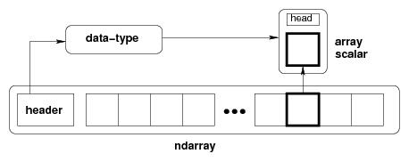
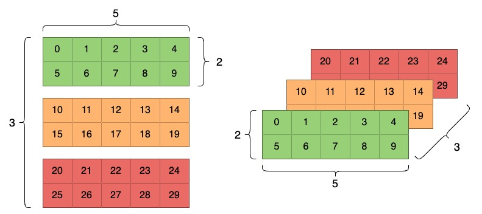
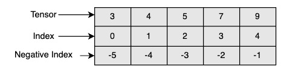
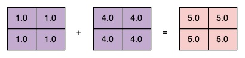

1.2 Introduction to Tensors
Created Date: 2025-04-28
In PyTorch, Tensor is a basic data structure, which is similar to NumPy array and can be efficiently operated on GPU.

Figure Conceptual diagram showing the relationship between the three fundamental objects used to describe the data in an array:
The ndarray itself;
The data-type object that describes the layout of a single fixed-size element of the array;
The array-scalar Python object that is returned when a single element of the array is accessed.
The most important property of a tensor is its shape, the shape of a PyTorch tensor tells we how many elements are along each dimension (also called axis). Here is a tensor with three axes:

So how do we create a tensor of shape (3, 2, 5)?
1.2.1 Tensor Creating
File create.py introduces some common methods for creating tensors.
A tensor can be constructed from a Python list or sequence using the torch.tensor() constructor:
python_list = [[1, 2], [3, 4]]
tensor_from_list = torch.tensor(python_list)
print('Tensor from list:', tensor_from_list)
numpy_array = numpy.array([[1, 2], [3, 4]])
tensor_from_array = torch.tensor(numpy_array)
print('Tensor from array:', tensor_from_array)Tensor from list: tensor([[1, 2],
[3, 4]])
Tensor from array: tensor([[1, 2],
[3, 4]])
torch.tensor() always copies data. If we have a Tensor data and just want to change its requires_grad flag, use requires_grad_() or detach() to avoid a copy. If We have a numpy array and want to avoid a copy, use torch.as_tensor().
A tensor of specific data type can be constructed by passing a torch.dtype and/or a torch.device to a constructor or tensor creation op:
device = 'cuda' if torch.cuda.is_available() else 'mps' \
if torch.mps.is_available() else 'cpu'
print(device)
tensor_custom = torch.tensor([1, 2, 3],
dtype=torch.int64,
device=device)
print(tensor_custom)cpu tensor([1, 2, 3])
More often than not, you'll want to initialize your tensor with some value. Common cases are all zeros, all ones, or random values, and the torch module provides factory methods for all of these:
tensor_zeros = torch.zeros(size=(3, 3))
tensor_ones = torch.ones((2, 2))
tensor_empty = torch.empty((2, 2))
print(tensor_zeros)
print(tensor_ones)
print(tensor_empty)
torch.manual_seed(47)
tensor_rand = torch.rand(2, 2)
tensor_randn = torch.randn(2, 3)
print(tensor_rand)
print(tensor_randn)tensor([[0., 0., 0.],
[0., 0., 0.],
[0., 0., 0.]])
tensor([[1., 1.],
[1., 1.]])
tensor([[0., 0.],
[0., 0.]])
tensor([[0.0530, 0.0499],
[0.4677, 0.8757]])
tensor([[-1.7173, 0.5757, 0.6040],
[ 1.1914, 0.3525, 0.2941]])
arange return a 1-D tensor of size \(⌈\frac{end - start}{step}⌉\) with values from the interval [start, end) taken with common difference step beginning from start.
linspace create a one-dimensional tensor of size steps whose values are evenly spaced from start to end, inclusize.
tensor_arange = torch.arange(0, 5)
assert (tensor_arange.numpy() == [0, 1, 2, 3, 4]).all()
tensor_linspace = torch.linspace(0, 1, steps=5)
assert torch.allclose(tensor_linspace,
torch.Tensor([0.0000, 0.2500, 0.5000, 0.7500, 1.0000]))For more information about building Tensors, see Creation Ops and Random sampling.
1.2.2 Tensor Indexing
Tensor can be indexed using the stanardard Python x[obj] syntax, where x is the array and obj the selection. File indexing.py shows some common cases.
1.2.2.1 Single Element
Single element indexing works exactly like that for other standard Python sequences. It is 0-based, and accepts negative indices for indexing from the end of the array.

tensor2d = torch.tensor([[1, 2, 3], [4, 5, 6], [7, 8, 9]])
assert tensor2d[1][2] == 6
assert tensor2d[0, 0] == 1
assert tensor2d[1, 2] == 6
assert tensor2d[-1, -1] == 9Use torch.Tensor.item() to get a Python number from a tensor containing a single value:
scalar = torch.tensor([[1]])
assert scalar.item() == 11.2.2.2 Basic Slicing
Basic slicing extends Python’s basic concept of slicing to N dimensions. Basic slicing occurs when obj is a slice object (constructed by start:stop:step notation inside of brackets), an integer, or a tuple of slice objects and integers.
tensor1d = torch.tensor([0, 1, 2, 3, 4, 5, 6, 7, 8, 9])
assert (tensor1d[1:7:2] == torch.tensor([1, 3, 5])).all()Assume n is the number of elements in the dimension being sliced. Then, if start is not given it defaults to 0 for step > 0. If end is not given it defaults to n for step > 0. If step is not given it defaults to 1. Note that :: is the same as : and means select all indices along this axis:
tensor2d = torch.tensor([[1, 2, 3], [4, 5, 6], [7, 8, 9]])
assert (tensor2d[0] == torch.tensor([1, 2, 3])).all()
assert (tensor2d[:, 1] == torch.tensor([2, 5, 8])).all()
assert (tensor2d[1:, 1:] == torch.tensor([[5, 6], [8, 9]])).all()1.2.2.3 Boolean Array
This advanced indexing occurs when obj is an array object of Boolean type, such as may be returned from comparison operators:
tensor1d = torch.tensor([10, 20, 30, 40, 50])
tensor_mask = tensor1d > 25
assert (tensor_mask == torch.tensor([False, False, True, True, True])).all()
assert (tensor1d[tensor_mask] == torch.tensor([30, 40, 50])).all()1.2.2.4 Integer Array
Integer array indexing allows selection of arbitrary items in the array based on their N-dimensional index. Each integer array represents a number of indices into that dimension.
tensor2d = torch.tensor([[1, 2, 3], [4, 5, 6], [7, 8, 9]])
row_indices = torch.tensor([0, 1, 1, 2])
col_indices = torch.tensor([2, 1, 1, 0])
assert (tensor2d[row_indices, col_indices] == torch.tensor([3, 5, 5, 7])).all()1.2.2.5 Indexing Tool
Ellipsis expands to the number of : objects needed for the selection tuple to index all dimensions:
tensor3d = torch.tensor([[[1], [2], [3]], [[4], [5], [6]]])
assert (tensor3d[..., 0] == torch.tensor([[1, 2, 3], [4, 5, 6]])).all()
assert (tensor3d[..., 0] == tensor3d[:, :, 0]).all()Each newaxis object in the selection tuple serves to expand the dimensions of the resulting selection by one unit-length dimension. The added dimension is the position of the newaxis object in the selection tuple. newaxis is an alias for None, and None can be used in place of this with the same result:
tensor1d = torch.tensor([1, 2, 3])
assert tensor1d.shape == (3,)
assert tensor1d[:, torch.newaxis].shape == (3, 1)
assert (tensor1d[:, torch.newaxis] == tensor1d[:, None]).all()For more information about indexing, see Indexing, Slicing, Joining, Mutating Ops.
1.2.3 Tensor Operating
Now that we know some of the ways to create/indexing a tensor... what can we do with them? PyTorch tensors have hundreds of operations that can ben performed on them. operate.py gives some basic use cases.
1.2.3.2 Math
Let’s look at basic arithmetic first, and how tensors interact with simple scalars:
ones = torch.zeros(2, 2) + 1
twos = torch.ones(2, 2) * 2
threes = (torch.ones(2, 2) * 7 - 1) / 2
fours = twos ** 2
sqrt2s = twos ** 0.5
assert torch.isclose(ones, torch.tensor([[1.0, 1.0], [1.0, 1.0]])).all()
assert torch.isclose(twos, torch.tensor([[2.0, 2.0], [2.0, 2.0]])).all()
assert torch.isclose(threes, torch.tensor([[3.0, 3.0], [3.0, 3.0]])).all()
assert torch.isclose(fours, torch.tensor([[4.0, 4.0], [4.0, 4.0]])).all()
print(sqrt2s)tensor([[1.4142, 1.4142],
[1.4142, 1.4142]])
As you can see above, arithmetic operations between tensors and scalars, such as addition, subtraction, multiplication, division, and exponentiation are distributed over every element of the tensor. Because the output of such an operation will be a tensor, you can chain them together with the usual operator precedence rules, as in the line where we create threes.
Similar operations between two tensors also behave like you’d intuitively expect:
fives = ones + fours
assert torch.isclose(fives, torch.tensor([[5.0, 5.0], [5.0, 5.0]])).all()
Here is a small sample from some of the major categories of operations:
a = torch.tensor([1, 2, 3, 4])
assert a.sum() == 10
a = torch.tensor([[1, 2], [3, 4]])
assert (a.sum(dim=0) == torch.tensor([4, 6])).all()
a = torch.tensor([1.0, 2.0, 3.0, 4.0])
assert torch.isclose(a.mean(), torch.tensor(2.5))
assert torch.isclose(a.max(), torch.tensor(4.0))
assert torch.isclose(a.min(), torch.tensor(1.0))1.2.3.3 Broadcasting
It’s important to note here that all of the tensors in the previous code cell were of identical shape. What happens when we try to perform a binary operation on tensors if dissimilar shape? The following cell throws a run-time error:
torch.rand(2, 3) * torch.rand(3, 2)In the general case, you cannot operate on tensors of different shape this way, even in a case like the cell above, where the tensors have an identical number of elements. The exception to the same-shapes rule is Tensor Broadcasting. Here’s an example:
tensor1 = torch.tensor([[2, 3, 4, 5], [6, 7, 8, 9]])
tensor2 = torch.tensor([[2, 2, 2, 2]])
doubled = tensor1 * tensor2
assert tensor1.shape == (2, 4)
assert tensor2.shape == (1, 4)
assert (doubled == torch.tensor([[4, 6, 8, 10], [12, 14, 16, 18]])).all()Broadcasting is a way to perform an operation between tensors that have similarities in their shapes. The rules for broadcasting are:
Each tensor must have at least one dimension - no empty tensors.
Comparing the dimension sizes of the two tensors, going from last to first:
Each dimension must be equal, or
One of the dimensions must be of size 1, or
The dimension does not exist in one of the tensors.
Tensors of identical shape, of course, are trivially “broadcastable”, as we saw earlier. Here are some examples of situations that honor the above rules and allow broadcasting:
a = torch.ones(4, 3, 2)
b = a * torch.rand(3, 2)
c = a * torch.rand(3, 1)
d = a * torch.rand(1, 2)
assert b.shape == (4, 3, 2)
assert c.shape == (4, 3, 2)
assert d.shape == (4, 3, 2)1.2.3.1 Copy and View
1.2.3.4 Reshape
1.2.3.5 Tensor Product
The Tensor Product, or Dot Product (not to be confused with an element-wise product, the * operator), is one of the most common, most useful tensor operations. In mathematical notation, note the operation with a dot (\(\cdot\)):